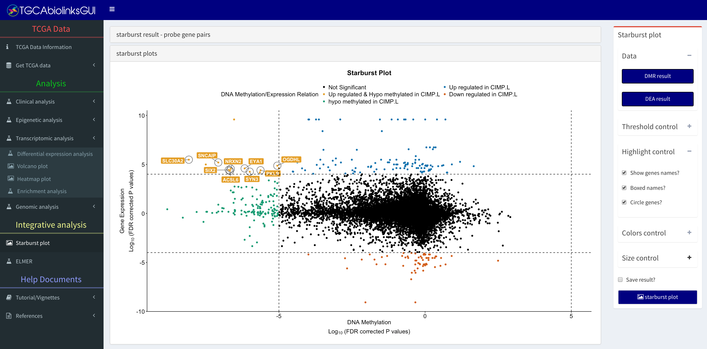

Integrative analysis
1 Menu: Starburst plot

Starburst plot menu: Main window.
1.1 Data
Expected input is a csv file with the following pattern:
- DEA result: DEA_results_Group_subgruop1_subgroup2_pcut_0.01_logFC.cut_2.csv
- DMR result: DMR_results_Group_subgruop1_subgroup2_pcut_1e-30_meancut_0.55.csv
1.2 Thresholds control
The possible thresholds controls are:
- Log FC threshold: gene expression Log2FC threshold
- Expression FDR cut-off: gene expression FDR cut-off (y-axis)
- Mean DNA methylation difference threshold: Mean DNA methylation difference threshold
- Methylation FDR cut-off: DNA methylation FDR cut-off (x-axis)
The options Mean DNA methylation difference threshold and Log FC threshold are used to circle genes which pass the cut-offs previously defined (eg. mean methylation or FDR).
1.3 Highlight control
The possible highlight controls are:
- Show gene names: show names of significant genes
- Boxed names: show names inside a box
- Circle genes: Circle candidate biologically significant genes
1.4 Other option
- Save result: save results in a csv file
1.5 Tutorial video: